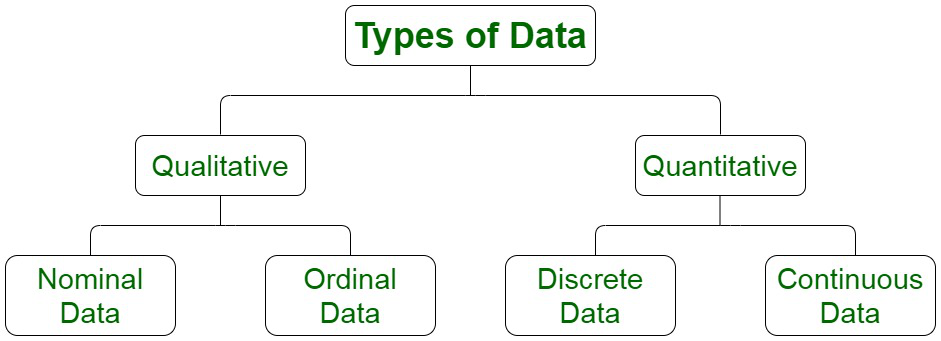

DATA
There are different types of data in Statistics, that are collected, analysed, interpreted and presented. The data are the individual pieces of factual information recorded, and it is used for the purpose of the analysis process.
TYPES OF DATA
QUALITATIVE DATA--these are measurements for which there is no natural numerical scale, but which consist of attributes, labels, or other nonnumerical characteristics.
QUATITATIVE DATA--these are numerical measurements that arise from a natural numerical scale.
|

|
TYPES OF QUALITATIVE DATA
NOMINAL DATA--It is a type of data that is used to label variables without providing any quantitative value. It is the simplest form of a scale of measure.
ORDINAL DATA--Ordinal data is a type of qualitative (non-numeric) data that groups variables into descriptive categories. A distinguishing feature of ordinal data is that the categories it uses are ordered on some kind of hierarchical scale, e.g. high to low.
|
TYPES OF QUATITATIVE DATA
DISCRETE DATA--Discrete data is a count that involves integers — only a limited number of values is possible. This type of data cannot be subdivided into different parts. Discrete data includes discrete variables that are finite, numeric, countable, and non-negative integers.
CONTINUOUS DATA--Continuous data is data that can be measured on an infinite scale, It can take any value between two numbers, no matter how small. The measure can be virtually any value on the scale.
|
|
| copyright @ 2022 | Statisticsforall |
|
|